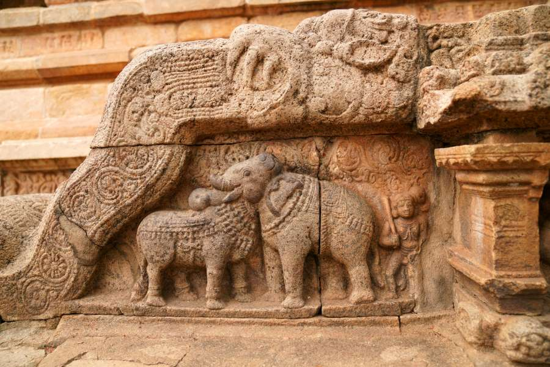
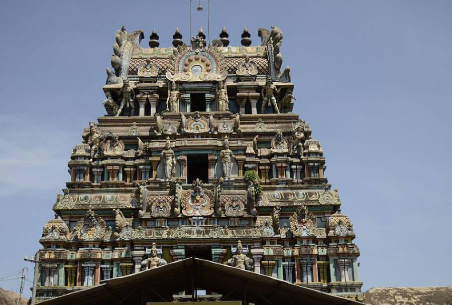
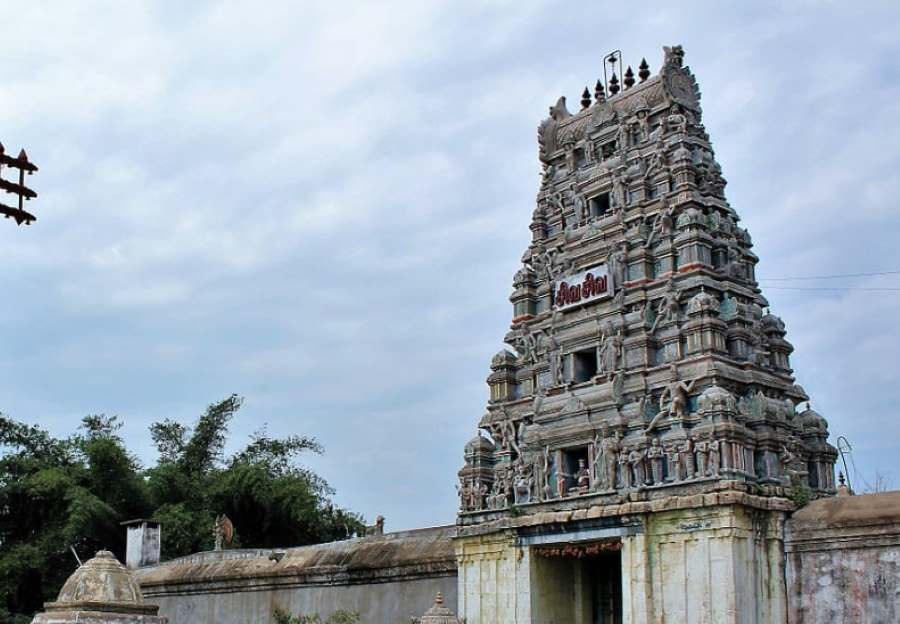
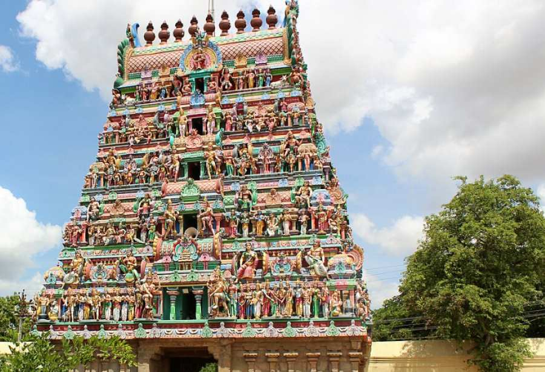
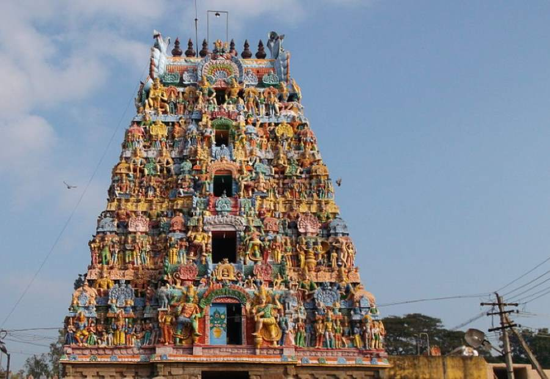
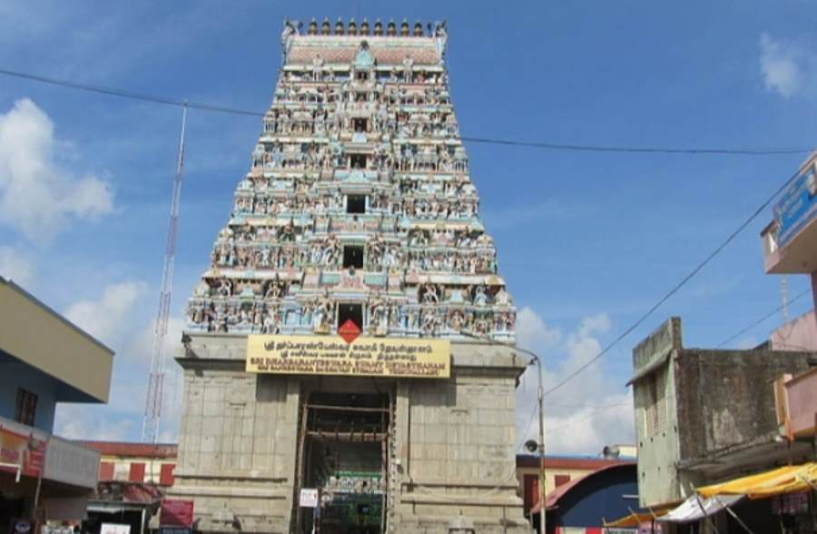
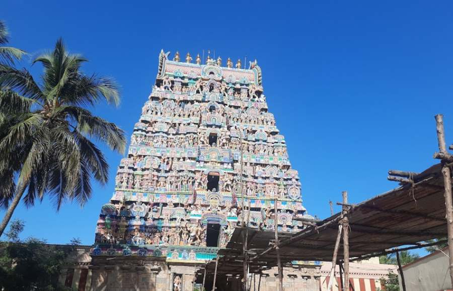
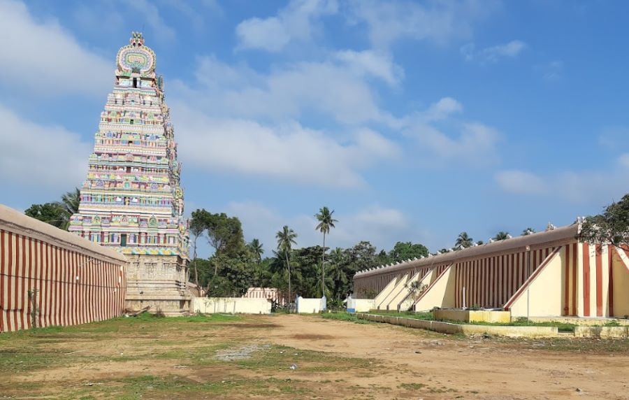

9 Navagraha Temples in Kumbakonam(Tamil Nadu) to Visit
Kumbakonam, a picturesque town nestled in the heart of Tamil Nadu, India, is renowned for its rich cultural heritage and ancient temples. Among its many treasures, the Navagraha Temples hold a special place, attracting pilgrims and tourists alike.
These nine temples dedicated to the celestial bodies, known as Navagrahas, offer a unique spiritual experience and are believed to bestow blessings and alleviate planetary afflictions.
List of Navagraha Temples in Kumbakonam
Here is the list of 9 Navagraha temples in Kumbakonam:
| Temples | Locations |
|---|---|
| Suryanar Kovil Temple (Surya) | Aduthurai |
| Kailasanathar Temple (Chandra) | Thingalur |
| Vaitheeswaran Koil Temple (Angaragan) | Vaitheeswarankoil |
| Swetharanyeswarar Temple (Budha) | Thiruvenkadu |
| Apatsahayesvarar Temple (Guru) | Alangudi |
| Agniswarar Temple (Sukran) | Kanjanur |
| Tirunallar Saniswaran Temple (Shani) | Karaikal |
| Naganathar Temple (Rahu) | Thirunageswaram |
| Naganathaswamy Temple (Ketu) | Keezhaperumpallam |
9 Navagraha Temples to Visit in Kumbakonam
Embark on a spiritual journey to the Navagraha Temples in Kumbakonam, where ancient myths and celestial blessings converge
1. Suryanar Kovil Temple (Surya) | Aduthurai
Suryanar Kovil Temple is dedicated to Surya, the Sun God, and is revered for its architectural grandeur and spiritual ambience.
Devotees visit to seek blessings for vitality, health, and prosperity.
- Best Time to Visit: January to February.
- Temple Timings: 7:00 AM to 12:30 PM, 4:00 PM to 8:30 PM - Everyday.
- Nearest Railway Station: Aduthurai Railway Station.
- Nearest Airport: Tiruchirappalli International Airport.
- Nearest Bus Station: Aduthurai Bus Stand.
- Nearby Places: Mahamaham Tank, Adi Kumbeswarar Temple, Kasi Viswanathar Temple
2. Kailasanathar Temple (Chandra) | Thingalur
Kailasanathar Temple is dedicated to Chandra, the Moon God, and is known for its serene ambience and ancient architecture.
Devotees seek blessings for emotional stability and mental peace.
- Best Time to Visit: September to October, March to April.
- Temple Timings: 7:00 AM to 1:00 PM, 4:00 PM to 9:00 PM - Everyday.
- Nearest Railway Station: Tanjore Railway Station.
- Nearest Airport: Tiruchirappalli International Airport.
- Nearest Bus Station: Kumbakonam Bus Stand.
- Nearby Places: Mahamaham Tank, Uppiliappan Temple, Swamimalai Murugan Temple.
3. Vaitheeswaran Koil Temple (Angaragan) | Vaitheeswarankoil

Vaitheeswaran Koil Temple is dedicated to Angaragan, the planet Mars, and is renowned for its healing powers. Devotees visit
this temple seeking remedies for health ailments and protection from malefic planetary influences.
- Best Time to Visit: January to February, November.
- Temple Timings: 6:00 AM to 1:00 PM, 4:00 PM to 8:00 PM - Everyday.
- Nearest Railway Station: Vaitheeswarankoil Railway Station.
- Nearest Airport: Tiruchirappalli International Airport.
- Nearest Bus Station: Vaitheeswarankoil Bus Stand.
- Nearby Places: Seerkazhi, Mayiladuthurai, Thirumanancheri.
4. Swetharanyeswarar Temple (Budha) | Thiruvenkadu
Swetharanyeswarar Temple, dedicated to Budha, the planet Mercury, is nestled amidst lush greenery and serene surroundings.
Devotees seek blessings for intelligence, communication skills, and success in education.
- Best Time to Visit: June to July.
- Temple Timings: 6:00 AM to 12:30 PM, 4:00 PM to 8:00 PM - Everyday.
- Nearest Railway Station: Mayiladuthurai Junction.
- Nearest Airport: Tiruchirappalli International Airport.
- Nearest Bus Station: Thiruvenkadu Bus Stand.
- Nearby Places: Swamimalai Murugan Temple, Mayiladuthurai, Sirkali, Tharangambadi (Tranquebar).
5. Apatsahayesvarar Temple (Guru) | Alangudi
Apatsahayesvarar Temple, dedicated to the Guru, the planet Jupiter, exudes spiritual vibes and divine grace.
Devotees visit this temple seeking blessings for wisdom, prosperity, and success in endeavours.
- Best Time to Visit: April to June.
- Temple Timings: 6:00 AM to 1:00 PM, 4:00 PM to 8:30 PM - Everyday.
- Nearest Railway Station: Needamangalam Railway Station.
- earest Airport: Tiruchirappalli International Airport.
- Nearest Bus Station: Alangudi Bus Stand.
- Nearby Places: Thiruvarur, Thirukattupalli, Thirupurambayam.
6. Agniswarar Temple (Sukran) | Kanjanur

Agniswarar Temple, dedicated to Sukran, the planet Venus, exudes a divine aura and architectural elegance.
Devotees visit this temple seeking blessings for love, harmony, and prosperity in relationships.
- Time to Visit: September to March.
- Temple Timings: 6:30 AM to 12:30 PM, 4:00 PM to 9:00 PM - Everyday.
- Nearest Railway Station: Kumbakonam Junction
- Nearest Airport: Tiruchirappalli International Airport.
- Nearest Bus Station: Kumbakonam Bus Stand.
- Nearby Places: Vaitheeswaran Koil Temple, Mayiladuthurai, Seerkazhi.
7. Tirunallar Saniswaran Temple (Shani) | Karaikal
Tirunallar Saniswaran Temple, dedicated to Shani, the planet Saturn, is revered for its spiritual ambience and divine energy.
Devotees visit this temple seeking relief from Saturn's malefic influence and blessings for longevity and prosperity.
- Best Time to Visit: October to April.
- Temple Timings: 5:30 AM to 12:30 PM, 4:00 PM to 8:30 PM - Everyday.
- Nearest Railway Station: Karaikal Railway Station.
- Nearest Airport: Tiruchirappalli International Airport.
- Nearest Bus Station: Karaikal Bus Stand.
- Nearby Places: Karaikal Beach, Karaikal Ammaiyar Temple, Nagore Dargah.
8. Naganathar Temple (Rahu) | Thirunageswaram
Naganathar Temple, dedicated to Rahu, the ascending lunar node, is renowned for its architectural beauty and spiritual significance.
Devotees visit this temple seeking remedies for planetary afflictions and blessings for success and prosperity.
- Best Time to Visit: October to November.
- Temple Timings: 6:00 AM to 1:00 PM, 4:00 PM to 9:00 PM - Everyday.
- Nearest Railway Station: Kumbakonam Railway Station.
- Nearest Airport: Tiruchirappalli International Airport.
- Nearest Bus Station: Kumbakonam Bus Stand.
- Nearby Places: Swamimalai Murugan Temple, Mahamaham Tank, Sarangapani Temple.
9. Naganathaswamy Temple (Ketu) | Keezhaperumpallam
Naganathaswamy Temple, dedicated to Ketu, the south lunar node, is revered for its spiritual sanctity and architectural splendour.
Devotees visit this temple seeking protection from malefic influences and blessings for spiritual growth.
- Best Time to Visit: September to May.
- Temple Timings: 6:00 AM to 12:45 PM, 3:30 PM to 8:00 PM - Everyday.
- Nearest Railway Station: Mayiladuthurai Railway Station.
- Nearest Airport: Tiruchirappalli International Airport.
- Nearest Bus Station: Mayiladuthurai Bus Stand.
- Nearby Places: Mahalingaswamy Temple, Panchanatheeswarar Temple, Arulmigu Sakthipureeshwarar Temple.
Explore the celestial wonders of Kumbakonam's Navagraha Temples, where spirituality meets architectural splendour. These ancient shrines offer a sacred haven for devotees seeking blessings and divine grace. Plan your pilgrimage to Kumbakonam and experience the mystical charm of the Navagraha Temples firsthand.